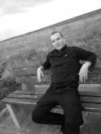
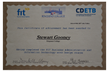
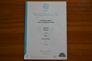

About Me

I was born in rural Ireland and grew up in a town called Thurles in Co. Tipperary. I completed my Leaving Cert in 1998 and started
to work as a garage hand/mechanic for a number of years. I got involved in maintainence and
car restoration, it was a fantastic job but as the times passed by the need to earn more and
and succeed in differant area's was a priority.
I started working as a semi-skilled operetive/Chef for a local factory called Dawn Fresh Foods
where i worked for 7 years. Unfortunatly that job came to an end in 2011 with a large loss of jobs
in the area.
I moved to Dublin and started working for Kylemore Services Group as a commis chef, where i was positioned in
the resturant in o Connell Street for 2 years. But as economic times got worse so did the employment in the
country. This job also got "knocked on the head" so it was time to think about up-skilling for a new career.
I then got the oppertunity to go back to college, i started a Fetac Level 5 Business Adminstration IT and Design and
from there i went on to do Fetac level 6 Business Management. I am now studying for a
Creative Digital Media Degree at the IT
Blanchardstown.

